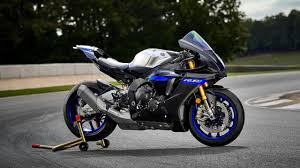

MotosMax
Las motos deportivas actuales son verdaderas proezas de la ingeniería. Cada vez los fabricantes aprietan más la competencia para ver cuál es la marca que crea los mejores productos. En la actualidad, la mayoría de las deportivas que están en el mercado han heredado la tecnología más sofisticada de las motocicletas de competencia de hace unos años.
La potencia, estética y funcionalidad fueron el diferencial de los modelos que introdujeron marcas como Aprilia desde los años ochenta. Con el paso de los años y las innovaciones tecnológicas esos valores se mantuvieron en los nuevos modelos de motos deportivas asociados a la precisión de la era digital. Gracias a esto podemos gozar hoy de motos con excelentes características al alcance de cualquiera.
Si quieres saber más sobre las mejores motos deportivas y las características que las hacen geniales, no puedes dejar de leer este artículo.
